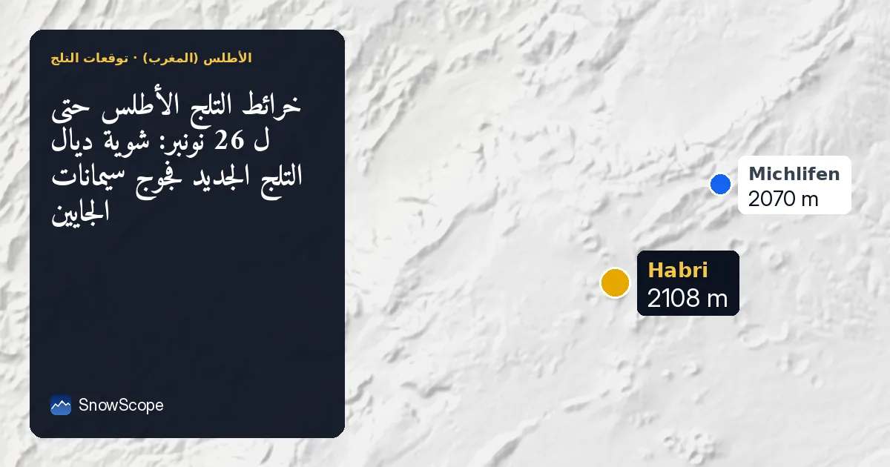
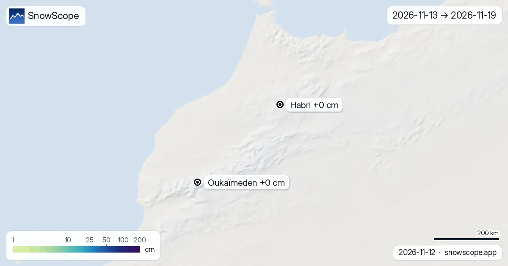

خرائط التلج الأطلس حتى ل 26 نونبر: شوية ديال التلج الجديد فجوج سيمانات الجايين
النظرة المستقبلية لمدة أسبوعين للأطلس (المغرب) من 13 لغاية 26 نونبر تبين نمط جاف. في جميع أنحاء الجهة، الجبال غادي شوية بزاف تشوف تلج جديد على هاد 14 يوم. لا Habri ولا Oukaïmeden ولا حتى أي تضاريس فوق 1000 م متوقع تاخد تلج يتقاس.
شوف توقعات التلج مباشرة ديال Habri فالتطبيق ديال SnowScopeالعلو ديال التلج، التنبيهات والخريطة 3D، فابور.
شنو ديال كل محطة
Habri غادي تبقى جافة على طول الأسبوعين، ما فاش تلج جديد متوقع على الجهة الفوقانية ديالها. Oukaïmeden، أعلى محطة في الجهة، واجهة نفس الصورة: 0 سم على طول 14 يوم كاملين. لا محطة من المحطتين شوفة يوم واحد فيه 5 سم أو أكثر من التلج الجديد.
هاد الفترة الجافة تعكس أنظمة الطقس الضعيفة في الجهة ديال منتصف لآخر نونبر. التوقعان العالميان (ECMWF و GFS) متفاهمين بزاف على هاد التوقعات، وما فاش بزاف شك.
| المحطة | العلو ديال التلج | تلج جديد، 72 س | جاي، الأيام الجاية | الفوق |
|---|---|---|---|---|
| Habri | 0 سم | 0 سم | 0 سم | 2108 م |
| Oukaïmeden | 0 سم | 0 سم | 0 سم | 3258 م |

تقسيم لأسابيع
إذا الأسبوع الأول (13 لغاية 19 نونبر) يشوف أي تلج جديد على الإطلاق على الجبال، غادي يكون فيه حوالي 11 بالمائة من المجموع ديال الأسبوعين. الأسبوع الثاني (20 لغاية 26 نونبر) كان يهضم الباقي، بصح هاك الباقي لا حاجة. في الواقع العملي، الأسبوعين كيهدرو بزاف.
هاك القسمة مهمة للتخطيط: الأسبوع الثاني ما فاش أمل فتحسن كذاك، هكاك القرارات اللي تاخد بيها بدري ما غادي تقلب فتلج ديال آخر نونبر.

التلج حسب الارتفاع: عامل الالتفاع
الالتفاع عادة كايقول سواء العاصفة تجيب تلج أو شتاء، وسواء التلج كايدوم. في الأطلس على هاد 14 يوم، الصورة موحدة: لا طبقة واحدة من الجبال—من 1000 م لغاية 4500 م—متوقع تاخد تلج جديد. حتى القمم العالية، حيث الحرارة تبقى باردة والتلج كايدوم، ما فيها حاجة.
هاك تقضي على الإمكانية بلي المنحدرات ديال منتصف الجبل (حول 2000-3000 م، تضاريس التزلج العادية) غادي تاخد فترات جافة بينما القمم تبقى مطمورة. كل الارتفاعات واجهة نفس التوقعات الجافة.

لا أيام متميزة للتلج
على طول 14 يوم من 13 لغاية 26 نونبر، لا يوم واحد يجيب 5 سم أو أكثر لأي من التضاريس اللي كانتجيبها.
هاك الغياب ديال الأيام ديال الحد الأدنى يعني لا بناء سريع للقاعدة، لا تحديث سريع للسطح ديال التلج، ولا أيام كاينة الصخور تتطمر على المنحدرات العليا الضحلة. الزلاجون اللي كايطططو رحلة غادي يواجهو التلج اللي بقى من أول الموسم.
شنو الخرائط كاتبين
ثلاث خرائط كاتجي معاها هاد التوقعات: واحدة للـ 14 يوم كاملين، واحدة للأسبوع الأول بوحده، واحدة للأسبوع الثاني. مقياس اللون كايدير من الأخضر الفاتح (تلج جديد قليل أو ما فاش) لغاية الأخضر الغامق لغاية الزرق والأرجواني (أمطار أثقل). هاك الخرائط كاتقرا القيمة ديال الوسط من التوقعين؛ المدى بينهم كايبين كيفاش مؤكد التوقع.
كاين الأوقات اللي تشوف مدى واسع في التوقعات اللي جاية، التوقعات ما متفاهمة بزاف، والشك هاك كايوسع هاميش التخطيط ديالك. خرائط جديدة كاتجي كل صباح.
شنو التلج الجاف يعني على الأرض
كاين التلج الجديد ما كايجيش، الحزمة ديال التلج اللي موجودة كاتبقى معرضة للشمس والريح. في نونبر في ارتفاعات الأطلس العالية، الشمس ضعيفة بصح كاتبقى نشيطة على المنحدرات اللي تتجه للجنوب. التضاريس ديال الوجه الشمالي الظليل في 3000 م وفوق غادي تهضم التلج القديم أطول مدة، بينما المنحدرات المشمسة غادي تنقص.
هاك هو بلاش كانقولو: شد الظل الأول. التلج كايدوم حيث الشمس ما كاتوصلش. إذا كايطط رحلة، كيدي على الوجوه الشمالية والتضاريس العالية في الجزء الأول من النهار، قبل ما الشمس ديال بعد الزوال تتقوى.
نصايح للي كيتزلجو
- استعمل الأسبوع الأول (13-19 نونبر) كنقطة تثبيت للتخطيط ديالك. الأسبوع الثاني ما فيه تحسن في التلج، هكاك ما تهدر الوقت ديالك فاه؛ قول الرأي بدري.
- مستوى الصفر ديال الدرجات (الالتفاع اللي الشتاء كايبدل لتلج) كايقدر يتحرك بمايات متر بين التوقعات، كايبدل شنو ديال التضاريس كاتشوف تلج. شد الخريطة مرة ثانية اليوم قبل اللي تتعافس.
- قبل أي خطة خارج البيست أو أي تنقل، قرا النشرة ديال الانهيارات الرسمية للجهة. الفترات الجافة كاتقدر تخبي عدم استقرار في طبقات التلج القديمة.
- هاك الخرائط كاتبين عمق التلج ديال التضاريس، ما حالة المحطة. تأكد بلي المصاعد كاتشتغل والمحطة مفتوحة قبل اللي تحجز رحلة.
على هاد الأرقام
العلو ديال التلج فالمحطات هو أكثر تلج فالجهة الفوقانية فالتاريخ المكتوب؛ هادو تقديرات لمنطقة، ماشي قياس فنقطة وحدة. التوقعات يمكن تتبدل. ديما شوف النشرة الرسمية ديال الانهيارات قبل ما تخرج من البيست.
كيفاش تستاشهد بهاد المقال
للبحث، التعليم ولا الصحافة: الأرقام والرسومات تقدر تعاود تخدم بيهم بحرية تحت CC BY 4.0 مع هاد الاستشهاد.
SnowScope (2026), خرائط التلج الأطلس حتى ل 26 نونبر: شوية ديال التلج الجديد فجوج سيمانات الجايين, https://snowscope.app/blog/ar/2026/11/atlas-morocco-2-week-snow-forecast-maps-12-november-2026.html, تشاف ف 2026-11-12
SnowScope (Atlas Labs). (2026, November 12). خرائط التلج الأطلس حتى ل 26 نونبر: شوية ديال التلج الجديد فجوج سيمانات الجايين. SnowScope snow reports. https://snowscope.app/blog/ar/2026/11/atlas-morocco-2-week-snow-forecast-maps-12-november-2026.html
BibTeX
@misc{snowscope2026atlasmorocco2weeksnowfor,
author = {{SnowScope (Atlas Labs)}},
title = {خرائط التلج الأطلس حتى ل 26 نونبر: شوية ديال التلج الجديد فجوج سيمانات الجايين},
year = {2026},
month = nov,
howpublished = {\url{https://snowscope.app/blog/ar/2026/11/atlas-morocco-2-week-snow-forecast-maps-12-november-2026.html}},
note = {Published 2026-11-12 18:20 UTC; accessed 2026-11-12}
}· CC BY 4.0 · الطريقة، الداتا والأدوات →
Habri: التلج والحرارة حسب العلو، هاد الشتا مقارنة مع اللي فاتت (الأدوات) →
تابع Habri
فابور: ميساج ملي يجي التلج، والتوقعات كل صباح.
تقارير أخرى ديال التلج

بغاو 8 سم غاع من التلج على أعلى القمم ديال الأطلس اليوم. ماشي فاين شي تلج في حتا محطة. الغطا كايتقلص بزاف فالنص ديال نونبر.

فالعلو ديال Oukaïmeden، السلسلة ديالنا ديال 46 شتوة كتبين 12 % أيام ديال التلج أقل؛ تحت، الإشارة كتضيع فالفرق الكبير بين الشتوات.

التلج كاتتراجع لأعلى القمم فالأطلس. المحطات التلاتة ماعندهمش تلج اليوم؛ 40 كم² ديال القمم كاتبقى بيضة. المزيد ديال الذوبان جاي.